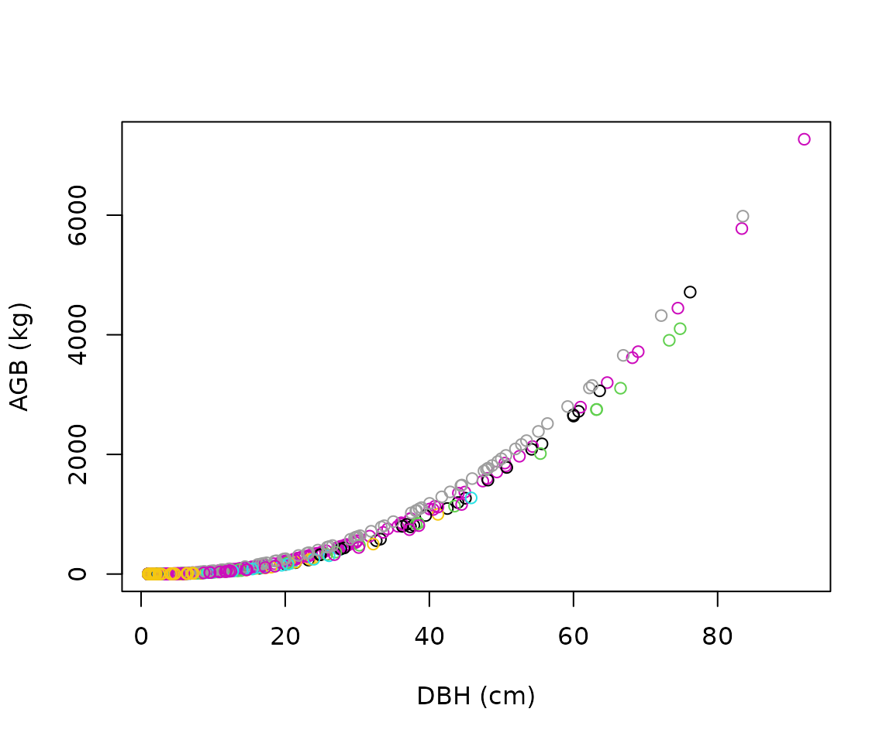
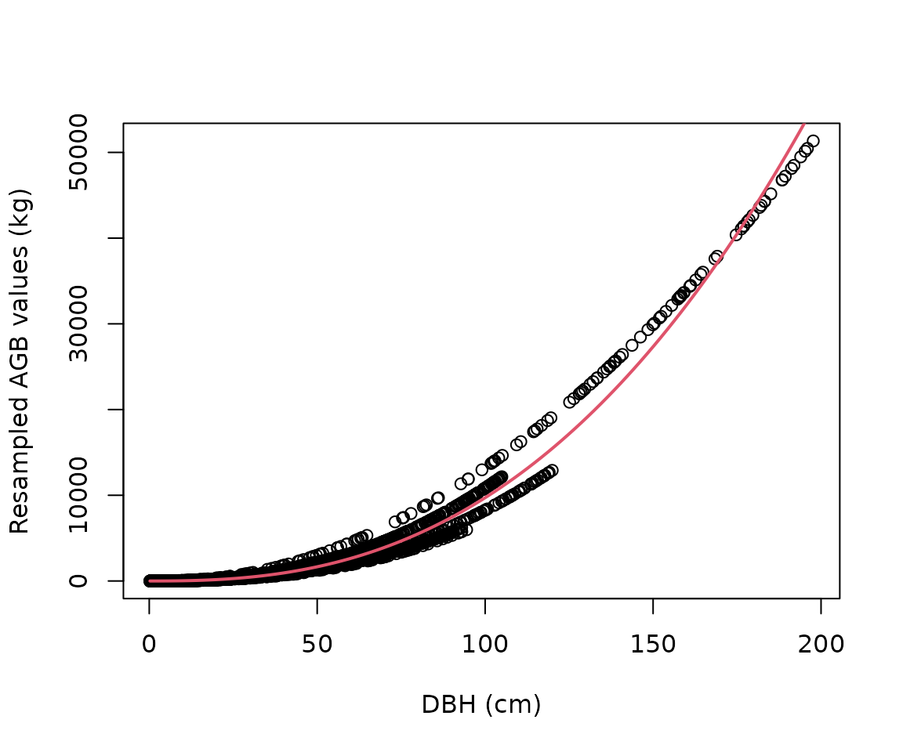
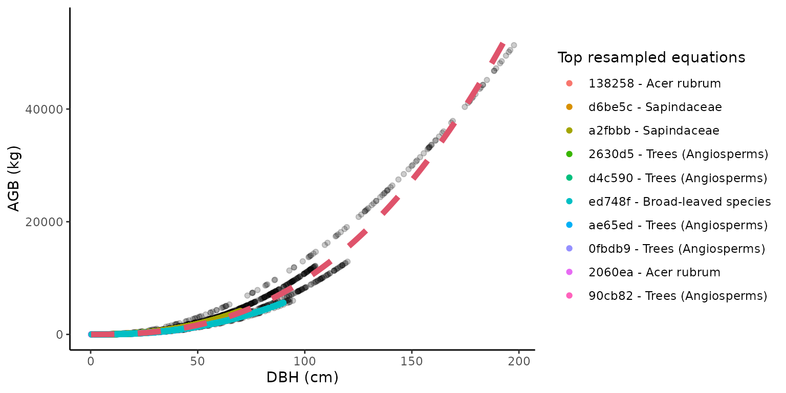
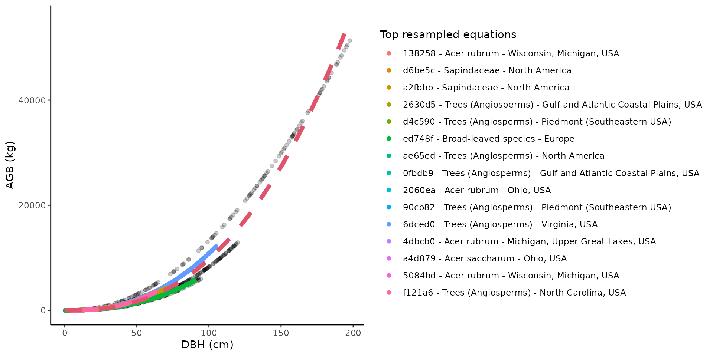

Installation
Install the development version of allodb from GitHub:
# install.packages("remotes")
remotes::install_github("ropensci/allodb")Load the census data
Prior to calculating tree biomass using allodb, users need to provide a table (i.e. dataframe) with DBH (cm), parsed species Latin names, and site(s) coordinates. In the following examples we use data from the Smithsonian Conservation Biology Institute, USA (SCBI) ForestGEO dynamics plot (1st census in 2008, trees from 1 hectare). Data can be requested through the ForestGEO portal (https://forestgeo.si.edu/)
require(allodb)
#> Loading required package: allodb
data(scbi_stem1)
str(scbi_stem1)
#> Classes 'tbl_df', 'tbl' and 'data.frame': 2287 obs. of 6 variables:
#> $ treeID : int 2695 1229 1230 1295 1229 66 2600 4936 1229 1005 ...
#> $ stemID : int 2695 38557 1230 32303 32273 31258 2600 4936 36996 1005 ...
#> $ dbh : num 1.41 1.67 1.42 1.04 2.47 ...
#> $ genus : chr "Acer" "Acer" "Acer" "Acer" ...
#> $ species: chr "negundo" "negundo" "negundo" "negundo" ...
#> $ Family : chr "Sapindaceae" "Sapindaceae" "Sapindaceae" "Sapindaceae" ...Load and modify the equation table
allodb provides a dataframe containing 570 parsed allometric equations.
data(equations)Additional information about the equation table can be found in the equation metadata.
data(equations_metadata)This equation table is the default in all functions of the package. Users can modify the set of equations that will be used to estimate biomass using the new_equations() function: users can work on a subset of those equations, or add new equations to the table (see ?allodb::new_equations). The customized equation table should be provided as an argument in the get_biomass() (or other) function (argument name: new_eqtable).
Subset the equation table
show_cols <- c("equation_id", "equation_taxa", "equation_allometry")
eq_tab_acer <- new_equations(subset_taxa = "Acer")
head(eq_tab_acer[, show_cols])
#> # A tibble: 6 × 3
#> equation_id equation_taxa equation_allometry
#> <chr> <chr> <chr>
#> 1 a4e4d1 Acer saccharum exp(-2.192-0.011*dbh+2.67*(log(dbh)))
#> 2 dfc2c7 Acer rubrum 2.02338*(dbh^2)^1.27612
#> 3 eac63e Acer rubrum 5.2879*(dbh^2)^1.07581
#> 4 f49bcb Acer pseudoplatanus exp(-5.644074+(2.5189*(log(pi*dbh))))
#> 5 14bf3d Acer mandshuricum 0.0335*(dbh)^1.606+0.0026*(dbh)^3.323+0.1222*…
#> 6 0c7cd6 Acer mono 0.0202*(dbh)^1.810+0.0111*(dbh)^2.740+0.1156*…Add new equations
eq_tab_add <- new_equations(
new_taxa = c("Quercus ilex", "Castanea sativa"),
new_allometry = c("0.12*dbh^2.5", "0.15*dbh^2.7"),
new_coords = c(4, 44),
new_min_dbh = c(5, 10),
new_max_dbh = c(35, 68),
new_sample_size = c(143, 62)
)
## show added equations - they contain "new" in their equation_id
head(eq_tab_add[grepl("new", eq_tab_add$equation_id), ])
#> # A tibble: 2 × 15
#> equation_id equation_taxa equation_allometry independent_variable
#> <chr> <chr> <chr> <chr>
#> 1 new1 Quercus ilex 0.12*dbh^2.5 DBH
#> 2 new2 Castanea sativa 0.15*dbh^2.7 DBH
#> # ℹ 11 more variables: dependent_variable <chr>, long <chr>, lat <chr>,
#> # koppen <chr>, dbh_min_cm <dbl>, dbh_max_cm <dbl>, sample_size <dbl>,
#> # dbh_units_original <chr>, dbh_unit_cf <dbl>, output_units_original <chr>,
#> # output_units_cf <dbl>Estimate the aboveground biomass
The aboveground biomass (AGB) can be estimated using the get_biomass() function: the required arguments are the diameter at breast height (DBH, in cm), the taxonomic identification (to the genus or species level), and the location (long-lat coordinates). The output is the aboveground biomass of the tree in kg.
get_biomass(
dbh = 50,
genus = "liriodendron",
species = "tulipifera",
coords = c(-78.2, 38.9)
)
#> [1] 1578.644The get_biomass() function can also be used to estimate the AGB of all trees in one (or several) censuses.
scbi_stem1$agb <-
get_biomass(
dbh = scbi_stem1$dbh,
genus = scbi_stem1$genus,
species = scbi_stem1$species,
coords = c(-78.2, 38.9)
)
plot(
x = scbi_stem1$dbh,
y = scbi_stem1$agb,
col = factor(scbi_stem1$genus),
xlab = "DBH (cm)",
ylab = "AGB (kg)"
)
How AGB is estimated
Attribute a weight to each equation in the equation table for each taxon/location combination
Within the get_biomass() function, new allometric equations are calibrated for each taxon/location combinations in the user-provided dataframe. This is done by attributing a weight to each equation in the equation table, based on its sampling size, and taxonomic and climatic similarity with the taxon/location combination considered.
allom_weights <-
weight_allom(
genus = "Acer",
species = "rubrum",
coords = c(-78, 38)
)
## visualize weights
equ_tab_acer <- new_equations()
equ_tab_acer$weights <- allom_weights
keep_cols <-
c(
"equation_id",
"equation_taxa",
"sample_size",
"weights"
)
order_weights <- order(equ_tab_acer$weights, decreasing = TRUE)
equ_tab_acer <- equ_tab_acer[order_weights, keep_cols]
head(equ_tab_acer)
#> # A tibble: 6 × 4
#> equation_id equation_taxa sample_size weights
#> <chr> <chr> <dbl> <dbl>
#> 1 138258 Acer rubrum 150 0.415
#> 2 d6be5c Sapindaceae 243 0.383
#> 3 a2fbbb Sapindaceae 200 0.349
#> 4 2630d5 Trees (Angiosperms) 886 0.299
#> 5 d4c590 Trees (Angiosperms) 549 0.289
#> 6 ed748f Broad-leaved species 2223 0.270Resample equations
Equations are then resampled within their original DBH range: the number of resampled values for each equation is proportional to its weight (as attributed by the weight_allom() function).
df_resample <-
resample_agb(
genus = "Acer",
species = "rubrum",
coords = c(-78, 38),
nres = 1e4
)
plot(
df_resample$dbh,
df_resample$agb,
xlab = "DBH (cm)",
ylab = "Resampled AGB values (kg)"
)Calibrate a new equation for each taxon/location combination
The resampled values are then used to fit the following nonlinear model: \(AGB = a \cdot dbh ^ b + e\), with i.i.d. \(e \sim \mathcal{N}(0, sigma^2)\). The parameters (a, b, and sigma) are returned by the est_params() function. In other words, this function calibrates new allometric equations from sampling previous ones. New allometric equations are calibrated for each species and location by resampling the original compiled equations; equations with a larger sample size, and/or higher taxonomic rank, and climatic similarity with the species and location in question are given a higher weight in this process.
pars_acer <- est_params(
genus = "Acer",
species = "rubrum",
coords = c(-78, 38)
)
plot(
df_resample$dbh,
df_resample$agb,
xlab = "DBH (cm)",
ylab = "Resampled AGB values (kg)"
)
curve(pars_acer$a * x^pars_acer$b,
add = TRUE, col = 2, lwd = 2
)
The est_params() function can be used for all species/site combinations in the dataset at once.
params <- est_params(
genus = scbi_stem1$genus,
species = scbi_stem1$species,
coords = c(-78.2, 38.9)
)
head(params)
#> # A tibble: 6 × 7
#> genus species long lat a b sigma
#> <chr> <chr> <dbl> <dbl> <dbl> <dbl> <dbl>
#> 1 Acer negundo -78.2 38.9 0.0762 2.55 433.
#> 2 Acer rubrum -78.2 38.9 0.0768 2.55 412.
#> 3 Ailanthus altissima -78.2 38.9 0.0995 2.48 377.
#> 4 Amelanchier arborea -78.2 38.9 0.0690 2.56 359.
#> 5 Asimina triloba -78.2 38.9 0.0995 2.48 377.
#> 6 Carpinus caroliniana -78.2 38.9 0.0984 2.48 317.AGB is then recalculated as AGB = a * dbh^b within the get_biomass() function.
Visualize the recalibration of equations
The recalibrated equation for one taxon/location combination can be easily visualized with the illustrate_allodb() function, which returns a ggplot (see package ggplot2) with all resampled values, and the top equations used displayed in the legend. The user can control the number of equations and equation information shown in the legend. The red dotted line is the recalibrated equation used in the get_biomass() function.
illustrate_allodb(
genus = "Acer",
species = "rubrum",
coords = c(-78, 38)
)
illustrate_allodb(
genus = "Acer",
species = "rubrum",
coords = c(-78, 38),
neq = 15,
eqinfo = c("equation_taxa", "geographic_area")
)